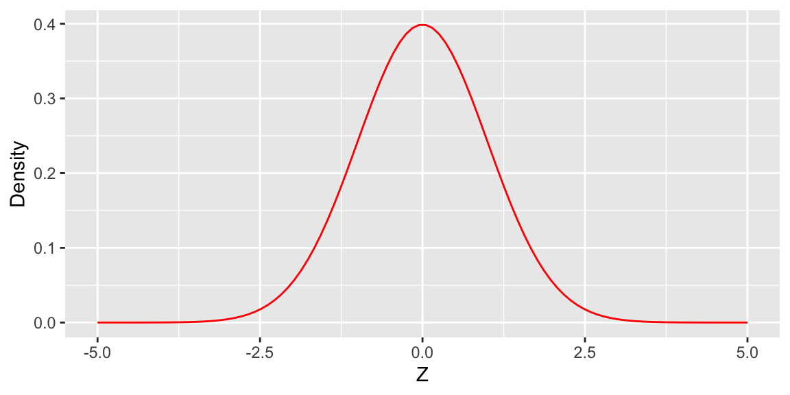
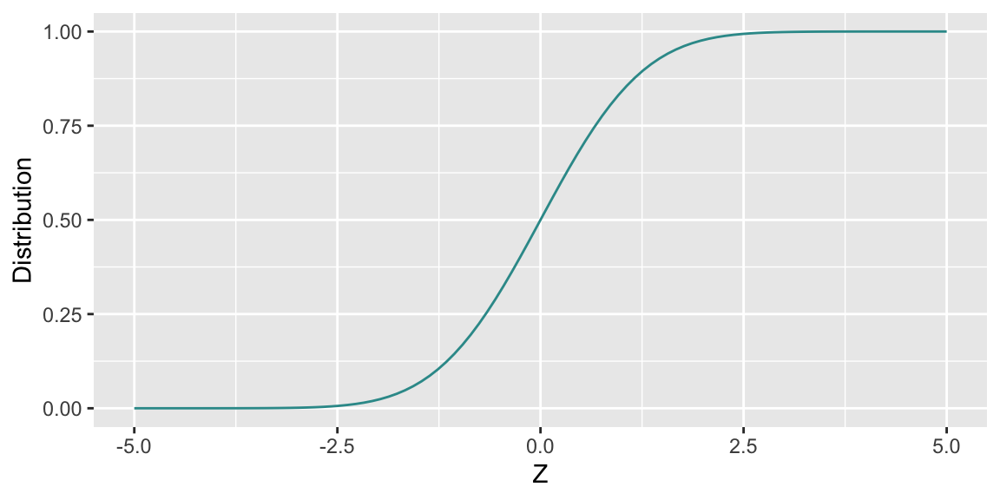
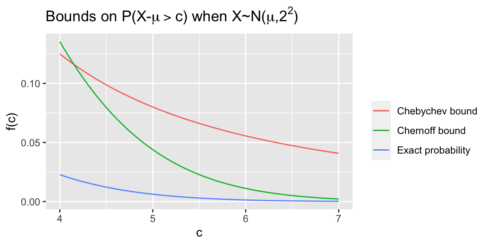
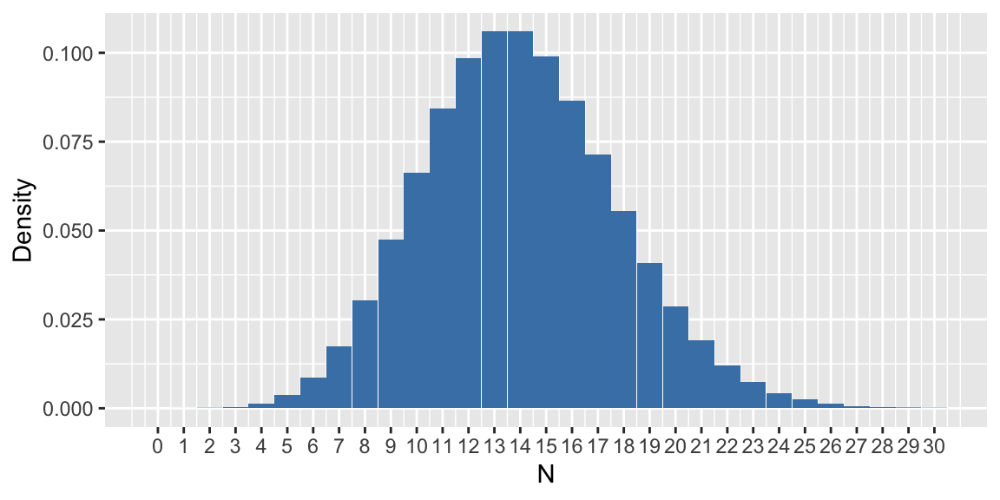
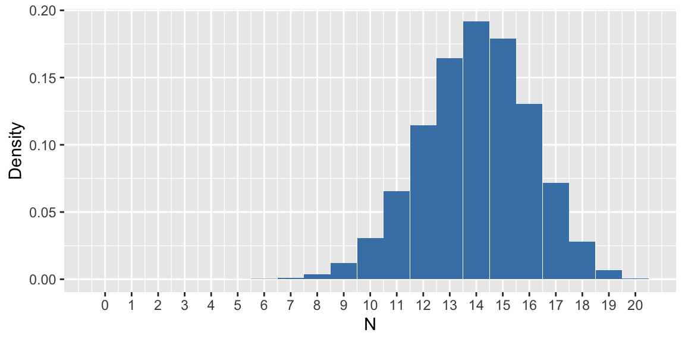
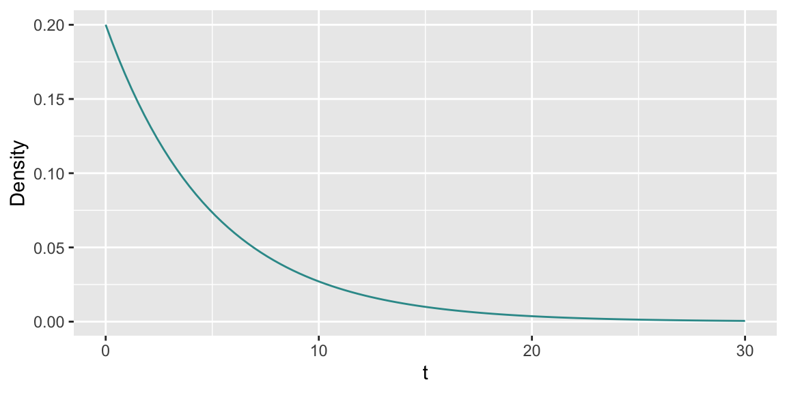
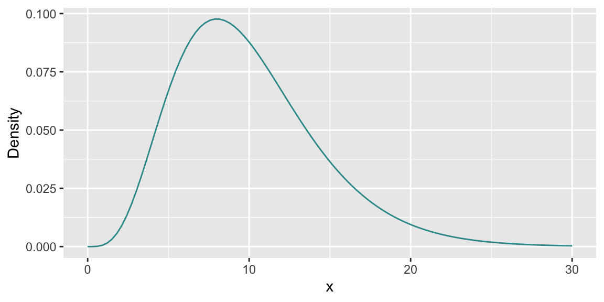
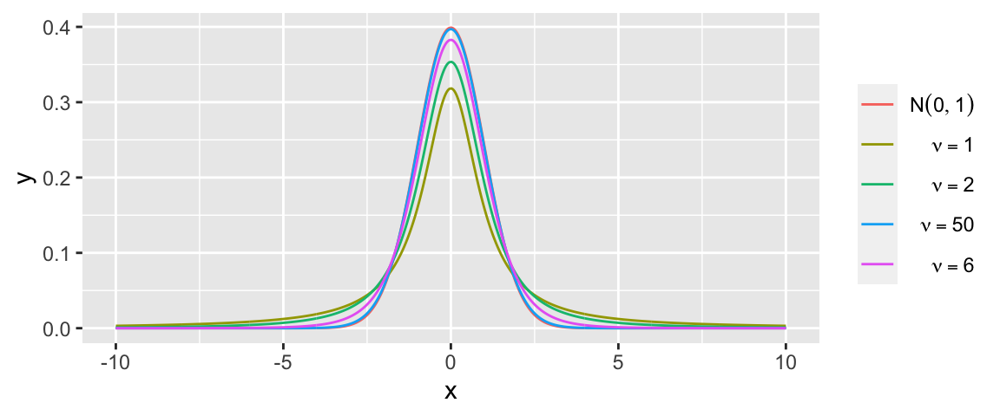

How do you roll a dice or flip a coin in R?
sample(6, size = 10, replace = TRUE)## [1] 5 6 5 6 5 4 3 2 4 4sample(7:10, size = 10, replace = TRUE)## [1] 9 10 9 9 8 7 10 10 10 10sample(c("H","T"), size = 10, replace = TRUE)## [1] "H" "H" "T" "H" "H" "T" "T" "T" "H" "T"library(prob)
tosscoin(1)## toss1
## 1 H
## 2 Ttosscoin(3)## toss1 toss2 toss3
## 1 H H H
## 2 T H H
## 3 H T H
## 4 T T H
## 5 H H T
## 6 T H T
## 7 H T T
## 8 T T Trolldie(1)## X1
## 1 1
## 2 2
## 3 3
## 4 4
## 5 5
## 6 6head(rolldie(3, nsides = 3))## X1 X2 X3
## 1 1 1 1
## 2 2 1 1
## 3 3 1 1
## 4 1 2 1
## 5 2 2 1
## 6 3 2 1head(cards())## rank suit
## 1 2 Club
## 2 3 Club
## 3 4 Club
## 4 5 Club
## 5 6 Club
## 6 7 Cluburnsamples(1:3, size = 2, replace = TRUE, ordered = TRUE)## X1 X2
## 1 1 1
## 2 2 1
## 3 3 1
## 4 1 2
## 5 2 2
## 6 3 2
## 7 1 3
## 8 2 3
## 9 3 3S <- tosscoin(2, makespace = TRUE)
S[1:3,]## toss1 toss2 probs
## 1 H H 0.25
## 2 T H 0.25
## 3 H T 0.25subset(S, toss2 == "T")## toss1 toss2 probs
## 3 H T 0.25
## 4 T T 0.25S <- cards()
subset(S, suit == "Spade")## rank suit
## 40 2 Spade
## 41 3 Spade
## 42 4 Spade
## 43 5 Spade
## 44 6 Spade
## 45 7 Spade
## 46 8 Spade
## 47 9 Spade
## 48 10 Spade
## 49 J Spade
## 50 Q Spade
## 51 K Spade
## 52 A Spadesubset(S, rank %in% c('A','Q'))## rank suit
## 11 Q Club
## 13 A Club
## 24 Q Diamond
## 26 A Diamond
## 37 Q Heart
## 39 A Heart
## 50 Q Spade
## 52 A Spadesubset(rolldie(3), X1 + X2 + X3 > 15)## X1 X2 X3
## 144 6 6 4
## 174 6 5 5
## 179 5 6 5
## 180 6 6 5
## 204 6 4 6
## 209 5 5 6
## 210 6 5 6
## 214 4 6 6
## 215 5 6 6
## 216 6 6 6subset(rolldie(3), X1 + X2 + X3 > 16)## X1 X2 X3
## 180 6 6 5
## 210 6 5 6
## 215 5 6 6
## 216 6 6 6S = cards()
A = subset(S, suit == "Heart")
B = subset(S, rank %in% c('Q','K'))
head(union(A,B))## rank suit
## 11 Q Club
## 12 K Club
## 24 Q Diamond
## 25 K Diamond
## 27 2 Heart
## 28 3 Heartintersect(A,B)## rank suit
## 37 Q Heart
## 38 K Heartprobspace(1:6)## x probs
## 1 1 0.1666667
## 2 2 0.1666667
## 3 3 0.1666667
## 4 4 0.1666667
## 5 5 0.1666667
## 6 6 0.1666667rolldie(1,makespace = TRUE)## X1 probs
## 1 1 0.1666667
## 2 2 0.1666667
## 3 3 0.1666667
## 4 4 0.1666667
## 5 5 0.1666667
## 6 6 0.1666667probspace(tosscoin(1), probs = c(0.6, 0.4))## toss1 probs
## 1 H 0.6
## 2 T 0.4S = cards(makespace = TRUE)
A = subset(S, suit == "Heart")
B = subset(S, rank %in% c('Q','K'))
prob(A)## [1] 0.25prob(B)## [1] 0.1538462prob(setdiff(A,B)) # P[A\B]## [1] 0.2115385urnsamples(1:3, size = 2, replace = TRUE, ordered = TRUE)## X1 X2
## 1 1 1
## 2 2 1
## 3 3 1
## 4 1 2
## 5 2 2
## 6 3 2
## 7 1 3
## 8 2 3
## 9 3 3nsamp(n = 3, k = 2, replace = TRUE, ordered = TRUE)## [1] 9S <- rolldie(2, makespace = TRUE)
head(S)## X1 X2 probs
## 1 1 1 0.02777778
## 2 2 1 0.02777778
## 3 3 1 0.02777778
## 4 4 1 0.02777778
## 5 5 1 0.02777778
## 6 6 1 0.02777778A <- subset(S, X1==6)
B <- subset(S, X1+X2>=8)
prob(B, given=A)## [1] 0.8333333iidspace(c("H","T"), ntrials = 3, probs = c(0.6, 0.4))## X1 X2 X3 probs
## 1 H H H 0.216
## 2 T H H 0.144
## 3 H T H 0.144
## 4 T T H 0.096
## 5 H H T 0.144
## 6 T H T 0.096
## 7 H T T 0.096
## 8 T T T 0.064S <- rolldie(3, makespace = TRUE)
S <- addrv(S, U = X1 + X2 + X3)
head(S)## X1 X2 X3 U probs
## 1 1 1 1 3 0.00462963
## 2 2 1 1 4 0.00462963
## 3 3 1 1 5 0.00462963
## 4 4 1 1 6 0.00462963
## 5 5 1 1 7 0.00462963
## 6 6 1 1 8 0.00462963S <- rolldie(3, makespace = TRUE)
S <- addrv(S, FUN = sum, invars = c("X1", "X2", "X3"),
name = "X")
head(S)## X1 X2 X3 X probs
## 1 1 1 1 3 0.00462963
## 2 2 1 1 4 0.00462963
## 3 3 1 1 5 0.00462963
## 4 4 1 1 6 0.00462963
## 5 5 1 1 7 0.00462963
## 6 6 1 1 8 0.00462963library(distr)
X <- Binom(size = 3, prob = 1/2)
X## Distribution Object of Class: Binom
## size: 3
## prob: 0.5d(X)(1) # pmf of X evaluated at x = 1## [1] 0.375p(X)(2) # cdf of X evaluated at x = 2## [1] 0.875library(distrEx)
E(X)## [1] 1.5var(X)## [1] 0.75sd(X)## [1] 0.8660254E(5*X+3)## [1] 10.5var(5*X+3)## [1] 18.75X <- Binom(size = 3, prob = 0.6)
Y <- 3*X+2
Y## Distribution Object of Class: AffLinLatticeDistributionX <- Norm(mean = 0, sd = 1)
Y <- 3*X+2
Y## Distribution Object of Class: Norm
## mean: 2
## sd: 3X <- Norm(mean = 0, sd = 1)
Y <- X^2
Y## Distribution Object of Class: AbscontDistributionX <- Norm(mean = 0, sd = 1)
Y <- X^2
Y## Distribution Object of Class: AbscontDistributionp(Y)(0.5)## [1] 0.5204999Z <- Chisq(df = 1)
p(Z)(0.5)## [1] 0.5204999S <- rolldie(2, makespace = TRUE)
S <- addrv(S, FUN = sum, invars = c("X1", "X2"),
name = "U")
S <- addrv(S, FUN = min, invars = c("X1", "X2"),
name = "V")
head(S)## X1 X2 U V probs
## 1 1 1 2 1 0.02777778
## 2 2 1 3 1 0.02777778
## 3 3 1 4 1 0.02777778
## 4 4 1 5 1 0.02777778
## 5 5 1 6 1 0.02777778
## 6 6 1 7 1 0.02777778JointD <- marginal(S, vars = c("U", "V"))
head(JointD)## U V probs
## 1 2 1 0.02777778
## 2 3 1 0.05555556
## 3 4 1 0.05555556
## 4 5 1 0.05555556
## 5 6 1 0.05555556
## 6 7 1 0.05555556marginal(JointD, vars = "U")## U probs
## 1 2 0.02777778
## 2 3 0.05555556
## 3 4 0.08333333
## 4 5 0.11111111
## 5 6 0.13888889
## 6 7 0.16666667
## 7 8 0.13888889
## 8 9 0.11111111
## 9 10 0.08333333
## 10 11 0.05555556
## 11 12 0.02777778dnorm(Z,mean,sd)pnorm(Z,mean,sd)Let us see an example:
z <- seq(-5,5,length.out=100)
dstandard <- data.frame(Z=z,
Density=dnorm(z,mean=0,sd=1)
, Distribution=pnorm(z,mean=0,sd=1))
head(dstandard)## Z Density Distribution
## 1 -5.000000 1.486720e-06 2.866516e-07
## 2 -4.898990 2.451061e-06 4.816530e-07
## 3 -4.797980 3.999890e-06 8.013697e-07
## 4 -4.696970 6.461166e-06 1.320248e-06
## 5 -4.595960 1.033101e-05 2.153811e-06
## 6 -4.494949 1.635096e-05 3.479323e-06ggplot(data = dstandard,aes(Z))+
geom_line(aes(y = Density),color="red")
ggplot(data = dstandard,aes(Z))+
geom_line(aes(y = Distribution),color="#339999")
Chebychev bound on the right tail \[P(X - \mu \ge c ) ~ \le ~ \frac{\sigma^2}{2c^2}\]
Chernoff bound on the right tail \[ P(X - \mu \ge c) ~ \le ~ e^{-ct^* + \sigma^2{t^*}^2/2} ~ = ~ e^{-c^2/2\sigma^2} \]

Probability density function is given by: \[P[X=k]=\dfrac{\lambda^k e^{-\lambda}}{k!},\ k=0,1,2,\dots\]
Command to use:
dpois(N,lambda)ppois(N,lambda)Example:
k=seq(from=0,to=30,by=1)
dpoisson <- data.frame(N=k,
Density=dpois(k, lambda=14),
Distribution=ppois(k, lambda=14))
head(dpoisson)## N Density Distribution
## 1 0 8.315287e-07 8.315287e-07
## 2 1 1.164140e-05 1.247293e-05
## 3 2 8.148981e-05 9.396275e-05
## 4 3 3.802858e-04 4.742485e-04
## 5 4 1.331000e-03 1.805249e-03
## 6 5 3.726801e-03 5.532050e-03ggplot(data=dpoisson, aes(x=N, y=Density)) +
geom_bar(stat="identity",width=0.99,fill="steelblue")+
scale_x_continuous(breaks=k)
ggplot(data=dpoisson, aes(x=N, y=Distribution)) +
geom_bar(stat="identity",width=0.99,fill="steelblue")+
scale_x_continuous(breaks=k)The probability density function of the binomial distribution is given by: \[P[X = k] = {n\choose k}p^k(1-p)^{n-k},\ k=0,1,2,\dots,n\] Command to use:
dbinom(N,size,prob)pbinom(N,size,prob)Example:
k=seq(from=0,to=20,by=1)
dbinomial <- data.frame(N=k,
Density=dbinom(k, size = 20, p = 0.7),
Distribution=pbinom(k, size = 20, p = 0.7))
head(dbinomial)## N Density Distribution
## 1 0 3.486784e-11 3.486784e-11
## 2 1 1.627166e-09 1.662034e-09
## 3 2 3.606885e-08 3.773088e-08
## 4 3 5.049639e-07 5.426947e-07
## 5 4 5.007558e-06 5.550253e-06
## 6 5 3.738977e-05 4.294002e-05ggplot(data=dbinomial, aes(x=N, y=Density)) +
geom_bar(stat="identity",width=0.99,fill="steelblue")+
scale_x_continuous(breaks=k)
ggplot(data=dbinomial, aes(x=N, y=Distribution)) +
geom_bar(stat="identity",width=0.99,fill="steelblue")+
scale_x_continuous(breaks=k)The probability density function of the exponential distribution is given by: \[p(x)= \lambda e^{-\lambda x},\ x\geq 0\] Command to use:
dexp(N,rate)pexp(N,rate)Example:
t=seq(from=0,to=30,length.out=100)
dexponential <- data.frame(t=t,
Density=dexp(t, rate = 0.2),
Distribution=pexp(t, rate = 0.2))
head(dexponential)## t Density Distribution
## 1 0.0000000 0.2000000 0.00000000
## 2 0.3030303 0.1882388 0.05880606
## 3 0.6060606 0.1771692 0.11415397
## 4 0.9090909 0.1667506 0.16624708
## 5 1.2121212 0.1569446 0.21527681
## 6 1.5151515 0.1477153 0.26142329ggplot(data = dexponential,aes(t))+
geom_line(aes(y = Density),color="#339999")
ggplot(data = dexponential,aes(t))+
geom_line(aes(y = Distribution),color="red")The probability density function of the \(\chi^2\) distribution is given by: \[p(x)=\begin{cases} \dfrac {x^{{\frac {k}{2}}-1}e^{-{\frac {x}{2}}}}{2^{\frac {k}{2}\Gamma \left(\frac {k}{2}\right)}},&x>0;\\ 0,&{\text{otherwise}}. \end{cases}\] Command to use:
dchisq(x,df)pchisq(x,df)Example:
x=seq(from=0,to=30,length.out=100)
dchisquare <- data.frame(x=x,
Density=dchisq(x, df = 10),
Distribution=pchisq(x, df = 10))
head(dchisquare)## x Density Distribution
## 1 0.0000000 0.000000e+00 0.000000e+00
## 2 0.3030303 9.435846e-06 5.866292e-07
## 3 0.6060606 1.297474e-04 1.655698e-05
## 4 0.9090909 5.644968e-04 1.109463e-04
## 5 1.2121212 1.533254e-03 4.127579e-04
## 6 1.5151515 3.217007e-03 1.112635e-03ggplot(data = dchisquare,aes(x))+
geom_line(aes(y = Density),color="#339999")
ggplot(data = dchisquare,aes(x))+
geom_line(aes(y = Distribution),color="red")The pdf of t-distribution is given by: \[p(t) = \frac{\Gamma(\frac{\nu+1}{2})} {\sqrt{\nu\pi}\,\Gamma(\frac{\nu}{2})} \left(1+\frac{t^2}{\nu} \right)^{\!-\frac{\nu+1}{2}},\!\] where \(\nu\) is the number of degrees of freedom.

Copyright © 2022 Biswarup Biswas. All rights reserved.